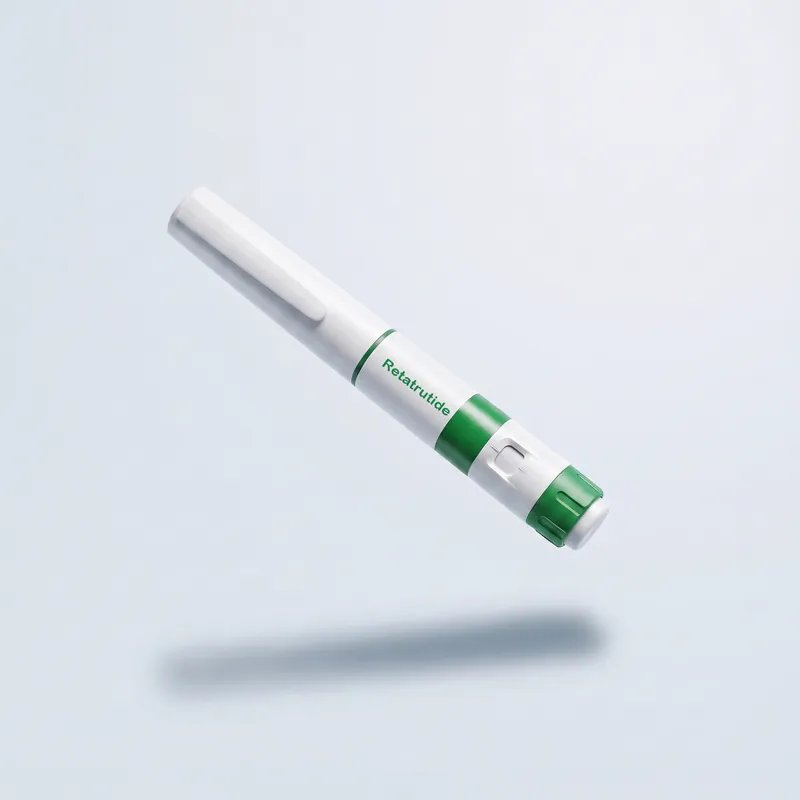

Рецептор GLP-1
Гормон насичення — зменшує апетит і допомагає контролювати харчування.
- Знижує відчуття голоду
- Уповільнює травлення
Потрійний агоніст GLP-1, GIP та глюкагону — нове покоління терапії для контролю ваги та метаболізму. Програма під наглядом лікарів Avelis Clinic.

Формат терапії
Ретатрутид — потрійний агоніст нового покоління. Формат курсу підбирається індивідуально після консультації.
| Критерій | Базова програма | Курс з титруванням |
|---|---|---|
| Формат | Стартова доза, мінімальний курс 4 тижні | Поступове підвищення дози під контролем лікаря |
| Супровід | Консультація та базові рекомендації | Регулярний моніторинг, корекція дози, аналізи |
| Для кого | Перший досвід терапії, помірні цілі | Значне зниження ваги, тривалий курс |
| Вартість | За | Індивідуальний розрахунок програми |
Ретатрутид досліджується в клінічних програмах Phase 3 (Eli Lilly). Призначення лише після оцінки лікарем.
Механізм дії
Єдина молекула одночасно активує три рецептори, що регулюють апетит, інсулінову відповідь та метаболізм жирів (за даними Eli Lilly).
Гормон насичення — зменшує апетит і допомагає контролювати харчування.
Інкретиновий гормон — посилює інсулінову відповідь після їжі.
Регулює енергетичний обмін у печінці та сприяє спалюванню жирів.
Безпека
Клас GLP-1/GIP-агоністів має спільні обмеження. Обов'язкова консультація перед стартом.
Алергія або підвищена чутливість до ретатрутиду
Медулярний рак щитоподібної залози (власний або сімейний анамнез)
Синдром множинної ендокринної неоплазії 2 типу (MEN2)
Цукровий діабет 1 типу
Вагітність та період грудного вигодовування
Тяжкі порушення функції печінки або нирок
ІМТ менше 27 — перевірте свій ІМТ
Гострий або хронічний панкреатит у стадії загострення
Ретатрутид — дослідницький препарат, що проходить клінічні випробування. Інформація не є медичним діагнозом. Джерела: Eli Lilly, Phase 3 TRIUMPH.
Інструкція
Загальні принципи для пептидних ін'єкцій у програмі схуднення під наглядом лікаря.
Підшкірна ін'єкція в живіт, стегно або плече. Ротація місць введення.
1 раз на тиждень. Доза та тривалість курсу визначаються лікарем індивідуально.
+2…+8 °C у холодильнику. Не заморожувати. Зберігати в оригінальній упаковці, захищати від світла.
Потрійний агоніст GLP-1, GIP та глюкагону: єдина молекула одночасно активує три рецептори, що регулюють апетит, інсулінову відповідь та метаболізм жирів (за даними Eli Lilly).
Ретатрутид — дослідницький препарат, що проходить клінічні випробування Phase 3 (Eli Lilly, програма TRIUMPH). Призначення — лише після оцінки лікарем.
Ozempic® (семаглутид) діє на рецептор GLP-1, Mounjaro® (тирзепатид) — на GLP-1 та GIP. Ретатрутид додатково активує рецептор глюкагону, який регулює енергетичний обмін у печінці. Який препарат підходить вам, визначає лікар.
Вартість розраховується індивідуально після консультації — залежно від формату: базова програма або курс з титруванням.
Базова програма — стартова доза, мінімальний курс 4 тижні, консультація та базові рекомендації; для першого досвіду терапії та помірних цілей. Курс з титруванням — поступове підвищення дози під контролем лікаря, регулярний моніторинг, корекція дози, аналізи; для значного зниження ваги та тривалого курсу.
1 раз на тиждень, підшкірно в живіт, стегно або плече з ротацією місць введення. Доза та тривалість курсу визначаються лікарем індивідуально.
У холодильнику при +2…+8 °C, в оригінальній упаковці, захищаючи від світла. Не заморожувати.
Клас GLP-1/GIP-агоністів має спільні обмеження: медулярний рак щитоподібної залози (власний або сімейний анамнез), синдром MEN2, цукровий діабет 1 типу, вагітність і грудне вигодовування, панкреатит у стадії загострення, ІМТ менше 27. Повний перелік — у блоці «Протипоказання» вище.
Дізнайтесь, чи підходить вам терапія ретатрутидом, та отримайте індивідуальний план курсу.